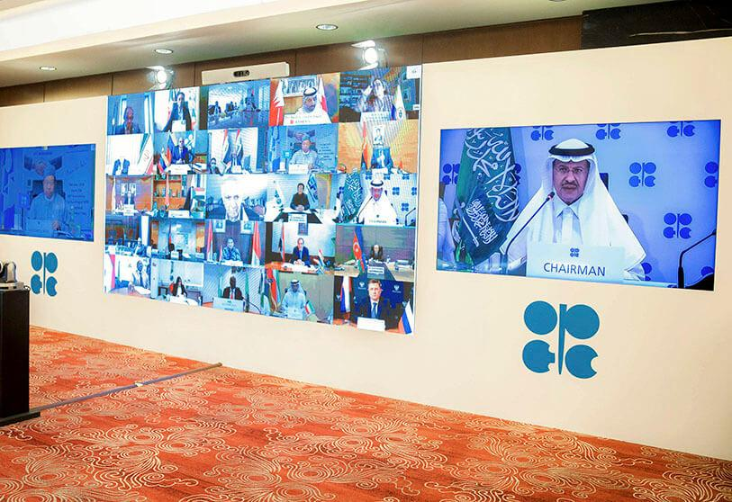
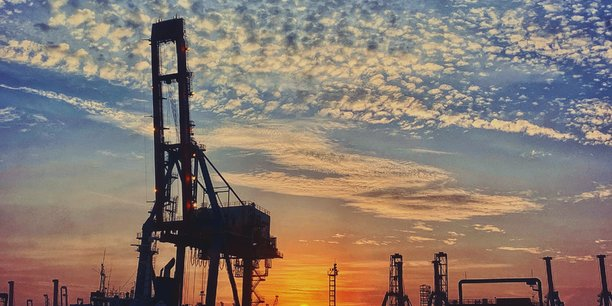

QU'EST CE QUE LE PÉTROLE ?
Le pétrole ou l’or noir est une matière première incontournable de nos jours, il constitue l'un des piliers majeurs de notre économie. Si le pétrole a largement contribué au développement technologique du XXème siècle, il s'annonce comme le fléau du XXIème. Le pétrole peut être extrait en milieu terrestre ou marin.
Avant d'être livré aux consommateurs, ce corps subisse plusieurs étapes de transformation. Il est d’abord extrait des profondeurs de la terre, transporté jusqu’aux usines de traitement ou l’on le débarrasse des corps étrangers. C’est après ces opérations que ce produit peut être utilisés par les consommateurs.
DE QUOI EST CONSTITUÉ LE PÉTROLE?
Le pétrole est un mélange d'hydrocarbures (molécules formées d'atomes de carbone et d'hydrogène) et de molécules contenant également d'autres atomes, principalement du soufre, de l'azote et de l'oxygène. Certains de ses constituants sont, à température et à pression ambiantes, gazeux (méthane, propane, etc.), liquides (hexane, heptane, octane, benzène, etc.) et parfois solides (paraffines, asphaltes, etc.). Le pétrole contient des milliers de molécules différentes qu'il va falloir fractionner et transformer chimiquement pour obtenir des produits utilisables.

LE PÉTROLE, A QUOI ÇA SERT ?
Les transports. Le pétrole est utilisé pour fabriquer du carburant. Le kérosène alimente les moteurs des avions, et l’essence et le gazole ceux des voitures. Les carburants produits à partir de pétrole sont plus polluants que les biocarburants, issus de la transformation de matières organiques (céréales, plantes, microalgues…).
La pétrochimie. Cette science permet de transformer le pétrole brut en matières plastiques. De nombreux objets de la vie de tousles jours (bouteilles, chaussures, DVD…) sont produits à partir de dérivés du pétrole.
Les hydrocarbures présents dans le pétrole brut ont également d’autres usages. C’est le cas du bitume, une substance utilisée pour le revêtement des routes, ou du fioul domestique, un combustible qui permet de se chauffer.
QUELLES SONT LES ÉTAPES QUI PRÉCÈDENT L'EXTRACTION ?
Tout d'abord, il faut repérer les bassins dans lesquels il vous sera pipelinepossible d'extraire les différentes accumulations d'hydrocarbures.
Une fois que l'entreprise considère que le sous-sol d'une région est sujet à contenir des produits pétroliers, elle a besoin d'obtenir un permis de recherche pour continuer son exploration.
Par la suite, grâce à une échographie du sous-sol par des ondes sonores, l'entreprise trouvera les réservoirs qui pourraient détenir les hydrocarbures tant convoités.
Les sociétés forent ensuite des puits pour débuter l'extraction.
COMMENT TRANSPORTE-T-ON LE PÉTROLE?
Généralement, les zones de production sont éloignées géographiquement des points de consommation. Ainsi, le pétrole doit être acheminé par voie maritime ou par oléoduc. Concernant le transport maritime, c’est un moyen de transport beaucoup plus souple que les autres. En effet, il est possible de changer de destination à tout moment. Quant à l’oléoduc, ou pipeline, il représente un lourd investissement. Cependant, il offre un faible coût d’utilisation.
OÙ SONT SITUÉS LES GISEMENTS DE PÉTROLE?
On dénombre environ 30 000 gisements rentables, de quelques dizaines à quelques centaines de km2. Parmi eux, l’on distingue 450 à 500 gisements dits "géants" (avec des réserves supérieures à 70 millions de tonnes), dont une soixantaine de "super-géants" (avec des réserves supérieures à 700 millions de tonnes). Ces gisements sont très inégalement répartis : 60 % des "super-géants" sont au Moyen-Orient et représentent 40 % des réserves prouvées de la planète.
Les 2/3 des réserves mondiales de pétrole sont concentrées au Moyen-Orient.
Les réserves (prouvées) : une notion clé
Dans la mesure où le pétrole n’est pas une énergie renouvelable, l’évaluation des réserves revêt de l’importance. Les réserves correspondent aux volumes de pétrole récupérables aux conditions techniques et économiques du moment dans des gisements exploités ou en passe de l’être.
Les réserves prouvées sont les quantités de pétrole dont l'existence est établie et dont les probabilités de récupération dans le cadre des données disponibles, de la technique d'extraction et des conditions économiques, sont d'au moins 90 %.
En moyenne seul 35 % des volumes de pétrole contenus dans les gisements est récupéré. Une amélioration des techniques d’extraction peut permettre d’accroître les réserves ; techniques qui, avec un prix élevé du baril, peuvent devenir rentables.Le pétrole offshore:
Les bassins sédimentaires offshore situés par moins de 500 mètres d'eau représentent plus de 30 millions de km2, soit une superficie équivalente à celle de l'Afrique. C'est dans cette tranche d'eau que l'on trouve une grande partie des réserves et de la production mondiale actuelles (30 % de la production mondiale, 20 % des réserves). La production offshore est donc indispensable à notre approvisionnement énergétique.
La production par grande profondeur d'eau (> 1 000 m d'eau) a connu des avancées technologiques majeures. Cette production reste cependant particulièrement complexe et coûteuse, et représente, encore aujourd'hui, un challenge technologique, les cibles de l'exploration étant toujours plus profondes, plus complexes.
La production de pétrole offshore était en 2017 de 27 Mb/j soit 29 % de la production mondiale.Les trois plus gros producteurs sont l’Arabie saoudite, les États-Unis et la Russie.
Actualité:les dernières nouvelles ...
LA PLANÈTE CONSOMME ACTUELLEMENT 30 MILLIARDS DE BARILS PAR AN
Les temps changent pour les compagnies pétrolières et pour les grands pays producteurs. Auparavant, leurs formidables profits suscitaient l'enthousiasme des marchés et des experts. Ces derniers sont encore très élevés : l'américain ExxonMobil, le numéro un mondial du secteur, vient d'annoncer un bénéfice net record de plus de 40 milliards de dollars pour l'année 2007. Mais les observateurs concentrent de plus en plus leur attention sur la capacité des grands groupes à renouveler leurs réserves, une stratégie indispensable pour que la planète ne manque pas de pétrole. Or, la situation devient de plus en plus critique : il y aurait aujourd'hui environ 1 000 milliards de barils de réserves prouvées. Les spécialistes avancent le chiffre de 2 000 milliards en prenant en compte les gisements les plus difficiles à exploiter. Mais le monde a besoin de plus en plus de pétrole pour vivre et se développer. «La planète consomme actuellement 30 milliards de barils par an, ou 150 mètres cubes de pétrole par seconde», souligne Yves Mathieu, ingénieur de recherche à l'Institut français du pétrole. La fracture entre ceux qui vont pouvoir satisfaire leurs besoins et les autres va donc s'aggraver.
L'OPEP AGGRAVE SES PRÉVISIONS DE CONSOMMATION MONDIALE DE PÉTROLE EN 2020 ET 2021 VIENA
L'effondrement de la consommation de pétrole sera de 9,5 millions de barils par jour (mbj) cette année - 9,5 % - par rapport à 2019, soit 400 000 barils par jour de plus qu'il y a un mois seulement, ce qui porte le chiffre total de la consommation quotidienne à 90,2 mbj. Ces calculs sont inclus dans le rapport sur le marché du pétrole brut que l'Organisation des pays exportateurs de pétrole (OPEP) publie chaque mois et qui collecte des données à partir du mois d'août. Le mois dernier, l'OPEP a déjà abaissé ses prévisions de consommation de 100 000 bd, si bien qu'au cours des deux derniers mois, l'organisation basée à Vienne a aggravé les prévisions de consommation de pétrole d'un demi-million de barils par jour. D'ici 2021, les prévisions de la demande mondiale ont également été revues à la baisse d'environ 400 000 barils, et une croissance de 6,6 mbj est prévue, la consommation mondiale s'établissant à 96,9 mbj.
LE TRAFIC AÉRIEN FORTEMENT IMPACTÉ
L'agence basée à Paris, qui conseille des pays développés sur leur politique énergétique, explique en particulier avoir revu à la baisse ses perspectives pour l'an prochain car « le secteur aérien va probablement mettre plus longtemps à se remettre ». La pandémie de Covid-19 a en effet mis quasiment à l'arrêt le trafic aérien, qui reprend maintenant très doucement. Ainsi, selon des statistiques citées par l'AIE, le trafic mondial pour le mois de juillet était encore en baisse des deux tiers par rapport à la normale, après avoir atteint - 75 % en juin et - 79 % en mai. « Les voyages d'affaires vont rester très réduits au niveau mondial tant qu'un vaccin ne sera pas trouvé, tandis que les voyages de loisirs seront essentiellement limités aux vols intérieurs et court-courriers », estime l'AIE. close volume_off Ces difficultés dans les transports et la chute de l'activité en général avaient conduit l'AIE à anticiper un effondrement historique de la demande de brut cette année. Elle doit rebondir l'an prochain mais sans toutefois revenir aux niveaux de 2019.